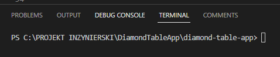
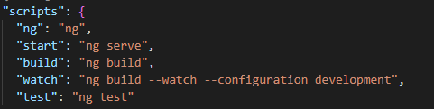
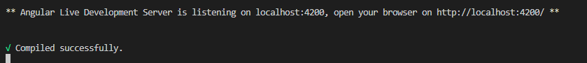
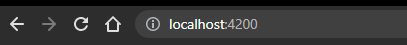

Procedura uruchomienia (na przykładzie Visual Studio Code)
Uruchomienie projektu odbywa się z poziomu IDE bądź z poziomu command line (CMD)❶ W Edytorze kodu należy uruchomić folder z projektem lub zaimportować go z GIT
❷ Następnie należy uruchomić wbudowany w edytor Terminal – domyślnie powinien nawigować do ścieżki w której znajduję się projekt jeżeli poprawnie wykonaliśmy krok pierwszy:

Wewnątrz pliku package.json znajdują się komendy dostepnę do użycia w projekcie poprzez terminal:

❸ Za pomocą komendy ng serve rozpoczynamy build projektu oraz postawienie go na live-serverze. Po pomyślnym wykonaniu buildu ostatnim komunikatem w terminalu będzie potwierdzenie kompilacji oraz adres na jakim hostowana jest aplikacja:

Aplikacja jest dostępna pod adresem : http://localhost:4200/
❹ Wprowadzamy adres w okno przeglądarki i otrzymujemy dostęp do aplikacji:

Aplikacja hostowana jest na Live Dev Server – wszystkie zmiany wprowadzone w kodzie będą automatycznie kompilowane i wyświetlane na localhost.